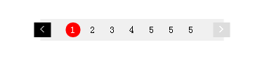

里层div绝对定位，因为不知道具体按钮数量,所以整个宽度是自适应的，用绝对进行居中，外层div相对定位，控制上下距离，适用于不用页面不同高度需求，只用一次就绝对定位硬写。。。。
<div class="bb">
<div class="num">
<span class="num_left numon"><</span>
<span class="num_right ">></span>
<span class="pop popon">1</span>
<span class="pop">2</span>
<span class="pop">3</span>
<span class="pop">4</span>
<span class="pop">5</span>
<span class="pop popon">5</span>
<span class="pop">5</span>
</div>
</div>

.bb{
position: relative;
margin-top:40px;
}
.num{
top: 0px;
padding: 5px 36px;
height: 21px;
line-height: 21px;
background-color: #f0f0f0;
position:absolute;
left:50%;
width:fit-content;
transform:translateX(-50%);
-webkit-transform:translateX(-50%);
-moz-transform:translateX(-50%);
font-size: 14px;
}
.pop{
width: 21px;
height: 21px;
display: inline-block;
text-align: center;
}
.popon{
background-color: red;
border-radius: 21px;
color: #fff;
}
.num_left,.num_right{
position: relative;
text-align: center;
width: 24px;
height: 21px;
color: #fff;
font-weight: bold;
background-color: #dddddd;
}
.num_left{
float: left;
margin-left: -45px;
}
.num_right{
float: right;
margin-right: -45px;
}
.numon{
color:#999999;
background-color: #000;
}